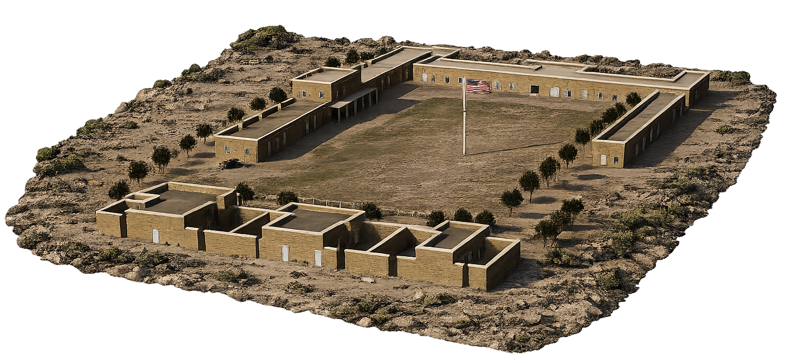
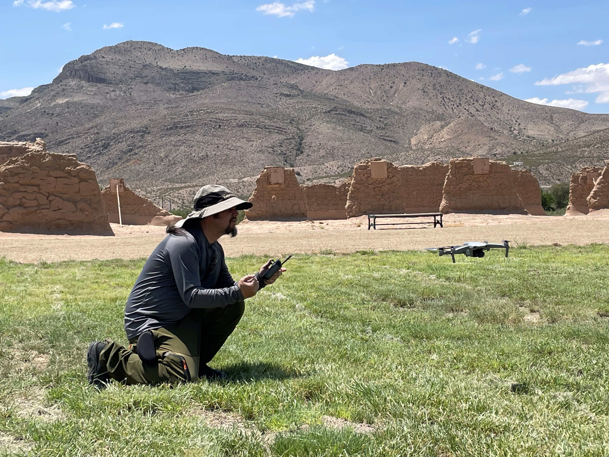
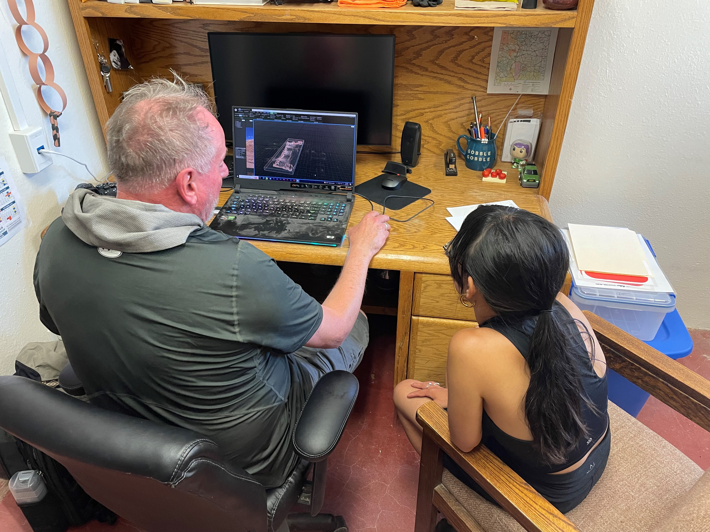

CULTURAL SCANS FOR INTERACTIVE 3D EXPERIENCES (SITES)
Fort Selden
RADIUM SPRINGS, NEW MEXICO— Fort Selden Historic Site is a former United States government post established in 1865. Built out of adobe, this garrison was home to 1,800 soldiers over 25 years and served to keep law and order in Territorial Southern New Mexico while assisting travelers through the region. Today Fort Selden is managed by New Mexico Historic Sites (NMHS) and comprises architectural remains that outline the footprint of the fort, along with artifacts, photographs, blueprints and other ephemera on view in the visitor center.
Fort Selden was the pilot scan for Cultural SITEs. The site ranged from foundations to a few adobe walls standing around 8 feet high. Using a Sony DSLR camera and DJI Mavic drone for photogrammetric data collection, the SITEs team set out to digitally render a complete exterior reconstruction of the fort with one interior reconstruction. This model now supports interactive public access and educational programming.
In the spring of 2023 the New Mexico Humanities Council (NMHC) and Northrop Grumman’s Technology for Conservation (NG T4C) initiative found a natural alignment in their shared vision for using photogrammetry and 3D imaging techniques to document and collect data on historic sites across New Mexico. The NMHC has a long institutional history of exploring the digital humanities and bridging the gap between technology and humanistic scholarship, while NG T4C is dedicated to leveraging cutting-edge technology for environmental and cultural conservation. The NG T4C team was particularly interested in pursuing digital heritage work in New Mexico as they have an office based in Albuquerque. The convergence of both organizations’ interests made their partnership a natural fit.
Fort Selden presented a particularly compelling state of preservation. Currently, much of the structure is razed to the ground and the only remaining adobe walls stand thanks to metal supports that have been installed after the state of New Mexico acquired the site. This provided the SITEs team with a rich opportunity to use their collected data—which included aerial imagery and close-range photographs—and archival photographs and blueprints of the fort to reconstruct it in a digital environment for a range of extended reality (XR) applications. This was an ambitious undertaking that pushed the boundaries of photogrammetry as a tool for historic preservation and documentation, and the project took approximately a year and a half to complete.
The urgency of this kind of preservation work at Fort Selden is underscored by a land survey conducted in the 1970s, when the fort came under NMHS management. At that time the adobe walls were eroding at a significantly quick pace, and surveyors projected that all the walls would be gone entirely by the 2020s. That projection prompted NMHS to allocate resources toward building the structural supports that we see at the site today. Fort Selden continues to benefit from ongoing documentation and preservation efforts that track the current condition and dimensions of the surviving structures.


Beyond digital documentation, the staff at Fort Selden placed a high priority on public access and the development of interactive visitor experiences as the goal for the Cultural SITEs scan. The team pursued two distinct experiential outputs: VR and AR applications. The VR experience would allow visitors to don a headset and walk through the digital reconstruction of the fort as well as inside the officers’ quarters. The AR application offers two modes of engagement: on-site visitors can hold their phone or smart device up in front of the architectural remains on the parade grounds and see the reconstruction populate on their screen in the original scale of the structure in situ. Remote users anywhere in the world can also access the AR experience, bringing a model of the fort directly to their device screen.
The complexity of this work yielded significant lessons for the SITEs team that informed future scans throughout the rest of the project. Developing a digital reconstruction for an immersive user experience proved to be labor-intensive and revealed the importance of placemaking in recreating scenes from the real world into the virtual. For instance, the team discovered that faithfully representing the surrounding Robledo Mountains was essential to spatial orientation within the VR environment. Integrating the AR application with mapping platforms to ensure precise geographic placement presented additional technical challenges.
{kind=link}
{kind=link}
{kind=link}
{kind=link}
{kind=link}
{kind=link}